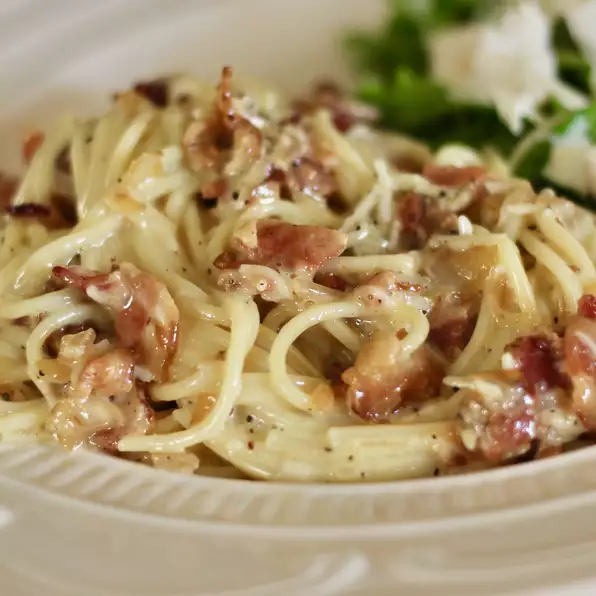

Carbonara 3

Description
This dish contains a mix of raw eggs, parmesan and bacon. This dish is considered a all time classic in the middle region ot Italy
Ingredients
- 16 ounce) package spaghetti
- slices thick-cut, applewood-smoked bacon
- 2 tablespoons olive oil, divided
- 1 onion, finely chopped
- 2 large cloves garlic, minced
- ¼ cup dry vermouth
- 1 cup shredded Parmesan cheese
- ½ cup whipping cream (Optional)
- 4 eggs, beaten
- 1 tablespoon ground black pepper
Steps
- Step 1
Bring a large pot of lightly salted water to a boil. Cook spaghetti in the boiling water, stirring occasionally, until tender yet firm to the bite, about 12 minutes.
- Step 2
Meanwhile, place bacon in a large skillet and cook over medium-high heat, turning occasionally, until evenly browned, about 10 minutes. Drain bacon slices on paper towels. Reserve 2 tablespoons bacon fat in the skillet and discard the rest. Chop bacon when cool enough to handle.
- Step 3
Add 1 tablespoon olive oil and onion to reserved bacon fat in the skillet. Cook over medium-high heat until the onion has softened and turned translucent, about 5 minutes. Add garlic and cook until fragrant, about 1 minute. Pour vermouth into the pan and bring to a boil while scraping the browned bits of food off the bottom of the pan with a wooden spoon, about 1 minute. Mix in chopped bacon.
- Step 4
Drain spaghetti, transfer to a large serving bowl, and mix in remaining 1 tablespoon oil. Add bacon-onion mixture, Parmesan cheese, cream, eggs, and pepper to the hot pasta; stir until spaghetti is well coated and sauce is creamy.